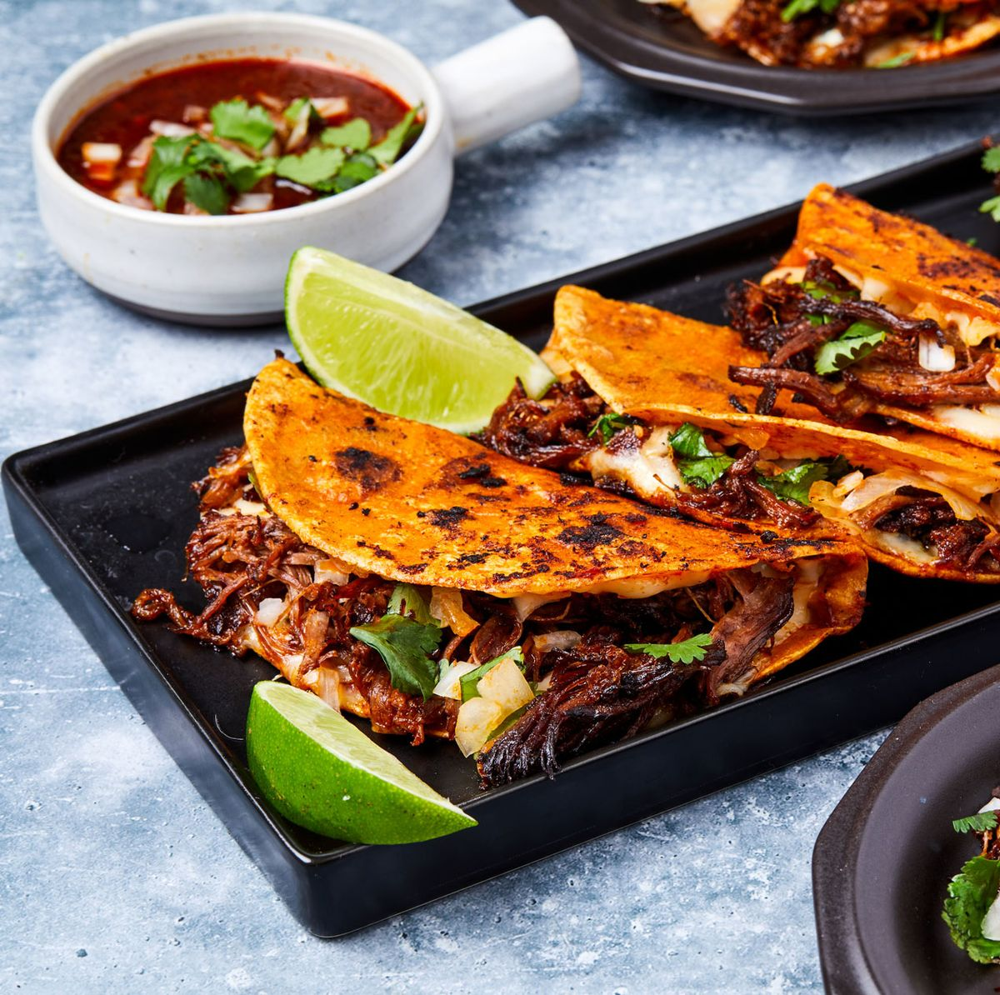

Birria Tacos

Mexican birria tacos, Jalisco-style, made with braised beef that's slow-cooked in a fragrant 3-chile sauce with a delicious spice mix.
Ingrediants
- Guajillo Chile Peppers
- Chile e arbol Peppers
- Dired Ancho Chiles
- 1 Tbsp Olive Oil
- 4 Medium Roma Tomoatoes
- 2 Tbsp white vinegar
- 2 Cloves Garlic
- 2 Tbsp Ground Black Pepper
- 4 Whole Cloves
- Ground Cinnamon
- Ground Cumin
- Ground Thyme
- Dried Marjoram
- Dried Oregano
- 1 Pinch Salt
- 4 lbs Chuck Roast
- Corn Tortillas
- 1 Large White Onion
- 1 Bunch Cilantro
- 1 Cup Shredded Queso Asadero
Steps
- Mexican birria tacos, Jalisco-style, made with braised beef that's slow-cooked in a fragrant 3-chile sauce with a delicious spice mix.
- Start the sauce: Add guajillo, arbol, and ancho chile peppers to the boiling water; boil for 5 minutes.
- Remove pot from the heat and allow peppers to soak until cool. Drain, reserving 1/4 cup of the cooking water.
- Meanwhile, sear the meat: Rinse beef and pat dry with paper towels. Cut beef into chunks if desired, and season with salt and pepper.
- Heat oil in a Dutch oven over medium-high heat. Add beef and cook until browned on all sides, about 10 minutes. Remove from the heat.
- While the beef is searing, continue the sauce: Line a heavy cast-iron grill pan or griddle with aluminum foil and place over high heat. Arrange tomatoes in a single layer on top. Grill until tomato skin is burned on all sides and begins to peel, 3 to 5 minutes.
- Place cooled chile peppers into a blender. Add vinegar, garlic, 2 teaspoons black pepper, cloves, cinnamon, cumin, thyme, marjoram, oregano, and salt in a blender. Pour in the reserved 1/4 cup of chile water and blend until smooth.
- Strain chile sauce through a mesh strainer and pour over browned meat in the Dutch oven, turning the roast so it is completely covered with sauce; cover with a lid.
- Bake in the preheated oven, basting meat every 45 minutes with sauce, until birria begins to fall apart, 3 to 4 hours. Remove the lid and bake, uncovered, until birria is crispy on top, about 20 minutes. Remove from oven, cover with 2 layers of aluminum foil, and allow to rest in a warm area for 10 minutes.
- Remove meat to a cutting board and strain off any fat from the sauce. Shred meat with two forks, then return meat to the pot and stir with the sauce to combine.
- Assemble and heat tacos: Fill each tortilla with birria and top with Mexican cheese, chopped onion, and cilantro. Warm tortillas on a griddle, flipping until both sides are crispy and cheese is melted.
- Serve with extra sauce on the side for dipping.